## LOAD PACKAGES ####
library(dplyr)Lesson 3:
Course website: https://hannahmetzler.eu/R_intro/
1 Goals
- Repeat setting up your work space with R-Projects, Git & GitHub
- Clean data using dplyr (
filterandmutate) - Make a histogram, scatter plot, and box plot
- Repeat the math behind linear regression
- Run a linear regression
- Summarise results in a Quarto Document
2 Set up your work space
- Make a remote git repository on GitHub (e.g. “rintro_lesson3”)
- Copy the SSH Link
- In the Terminal, navigate to your folder for this R course using
cd. - Type
git cloneand paste your SSH link. - In the now local folder of the repository, create sub folders (e.g. “data”, “figures”, “code”, “write_up”).
- Put the data file for this lesson in your “data” folder.
- Make a new R Project based in your main directory folder (e.g. “rintro_lesson3”).
- Commit & Push to GitHub.
3 Analysis project for Lesson 3
Data from the USA Social Security Administration on baby names
2 research questions:
- Continuous Predictor: Does the name “Page” get more or less popular between the years of 1901 and 2000?
- Categorical Predictor: Is the name “Page” more or less popular with females or males?
4 Organizing your scripts
- Separate scripts for each step can be useful, we will use this structure today:
- cleaning
- figures
- statistics
- Alternatively, these can be sections in a Quarto Document.
To do
Create a script and save it in the code folder as 01_cleaning.R.
5 Cleaning script
- Start again with a header (# TITLE ####) for loading packages.
- We only need the package
dplyrfor now. - Shortcut to run a line of code from a script:
Ctrl/Strg/Cmd + Enter
- Next, we read in data, with the same function as last time but for .txt files.
- The argument col_types defines what kind of variables.
data = readr::read_tsv("data/lesson2_data_babynames.txt")To check if the file was read correctly you can use head(data) in the Console.
head(data)| year | sex | name | n | prop |
|---|---|---|---|---|
| 1880 | F | Caroline | 306 | 0.0031351 |
| 1880 | F | Hannah | 221 | 0.0022642 |
| 1880 | F | Helena | 60 | 0.0006147 |
| 1880 | F | Teresa | 50 | 0.0005123 |
| 1880 | F | Claudia | 48 | 0.0004918 |
| 1880 | F | Magdalena | 19 | 0.0001947 |
- Check if your own name exists in the dataset using the function
filter():- Check the function in the help:
?dplyr::filter(Description, Usage & Examples).- The first argument is for the dataframe.
- The second argument (
...) is for the expression that defines our condition for rows we want to keep. - The Examples section shows you how to use the function.
- Check the function in the help:
- I’ll be using the name “Page” - in honor of the colleague who taught me R with exactly this same data set.
data_clean = dplyr::filter(data, name == "Page")Check if it worked, for example using head() on the new data frame
head(data_clean)| year | sex | name | n | prop |
|---|---|---|---|---|
| 1881 | M | Page | 5 | 4.62e-05 |
| 1887 | M | Page | 5 | 4.57e-05 |
| 1888 | M | Page | 5 | 3.85e-05 |
| 1890 | F | Page | 5 | 2.48e-05 |
| 1891 | M | Page | 5 | 4.58e-05 |
| 1892 | M | Page | 9 | 6.85e-05 |
If this is empty, your name does not exist in the US names data set. Simply stay with the name “Page”.
dplyr::filter(data, name == "Lav")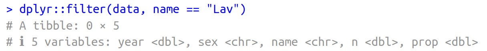
- Now, we’ll use the same code to assign only rows with your name to the data frame
data_clean. - We want to be able to run more functions to clean the data. We can do this using the Pipe (%>%) after data.
filter()will then be run ondatabefore assigning todata_clean.- Shortcut:
Shift + Ctrl/Cmd + M
- Shortcut:
- Copy and run the code below.
- To use something different, I check if it worked with
xtabs()this time.
## CLEAN DATA ####
data_clean = data %>%
filter(name == "Page")
xtabs(~name, data_clean)name
Page
206 We only want to look at the 20th century, so we filter out the years between 1900 and 2000 using the filter() function:
- The first new filter call selects all years after 1900, the second all years up to and including 2000.
data_clean = data %>%
filter(name == "Page") %>%
filter(year > 1900) %>%
filter(year <= 2000)To confirm this worked, we can check the minimum and maximum year in the new data frame. For the name “Page”, this shows the first year in which it was given to a baby was 1909.
min(data_clean$year)[1] 1909max(data_clean$year)[1] 2000
To do
- Save the cleaning script.
- Commit the changes to Git. The commit message could be “Made cleaning script”.
- Open a new script
02_figures.R
6 Figures Script
We’ll learn a new function now: source() tells R to run another script.
- We can use it to run the cleaning script from our figures script, to read in our clean data.
## READ IN DATA ####
source("code/01_cleaning.R")- Enter the exact path and name of your script.
- To be sure it works, first delete all objects from the Environment (broom symbol or
rm(list = ls))
All variables should now reappear in your Environment:
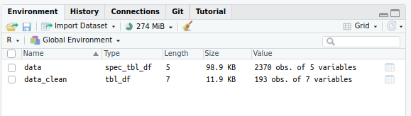
Now load all packages not yet loaded in the cleaning script. We need ggplot2 to make a figure.
## LOAD PACKAGES ####
library(ggplot2)We may want to change names or levels of variables a bit for our figures. It’s good to create an extra data set for this:
## ORGANIZE DATA ####
data_figs = data_clean6.1 Checking for normal distribution: Histogram
To run a linear regression, our dependent variable needs to be normally distributed. A perfect normal distribution is symmetrical, for example, here 2 distributions with n = 1 million observations:
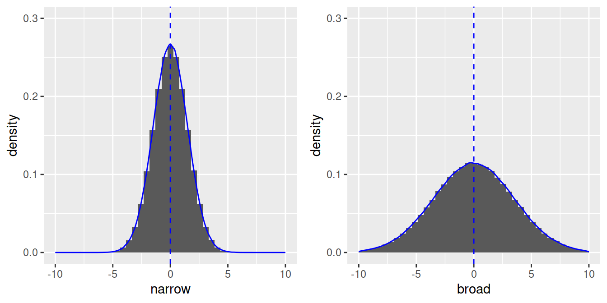
- With less observations, the shape will be less perfect, but still roughly symmetrical (n = 100) with most values around the mean:
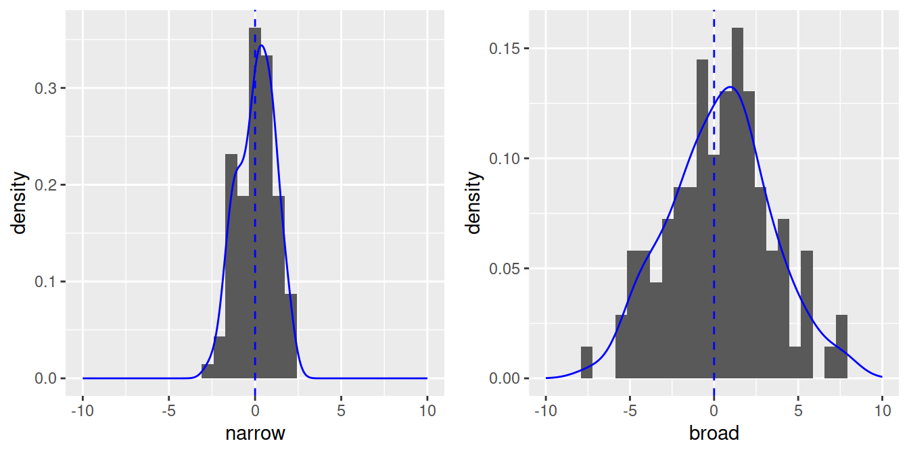
Let’s check the distribution of our dependent variable with a histogram:
## MAKE FIGURES ####
# Histogram of dependent variable (proportion of 'Page's)
name.plot = ggplot(data_figs, aes(x = prop)) +
geom_histogram()
name.plot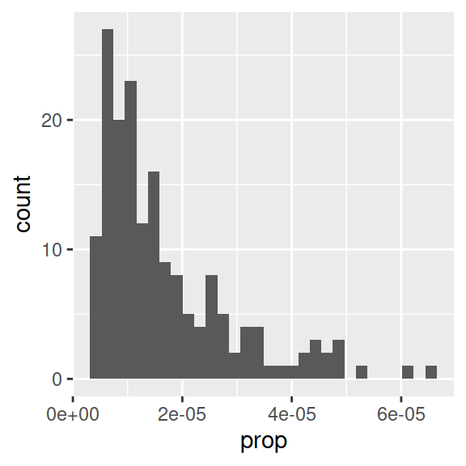
- Proportion of babies with the name “Page” is clearly not normally distributed.
- Note that aes() only needs an x-variable for histograms, because we plot only one variable.
- Information message about bins: R picks one by default, but notifies you that you can enter a better one, as the binwidth can really change the shape of a distribution.
# Histogram with specific binwidth
ggplot(data_figs, aes(x = prop)) +
geom_histogram(binwidth = 0.0000005)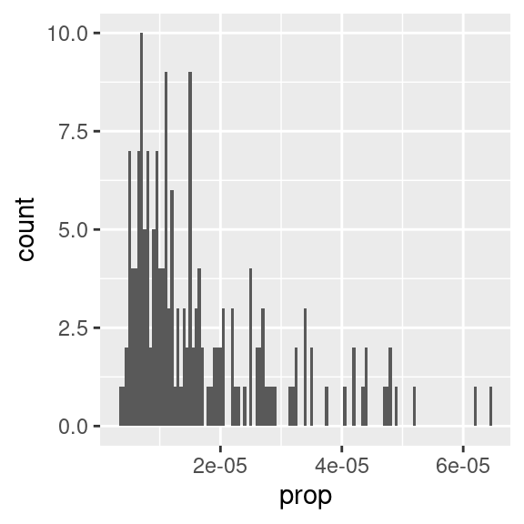
- One usual way of making data normal is a log transformation. In R, you can take the logarithm with base 10 with
log10(). - Go back to the cleaning script to do the log transform. To make any transformation to a variable, we can use
mutate()from dplyr.mutate()is used to make a new column or change an existing one.
data_clean = data %>%
filter(name == "Page") %>%
filter(year > 1900) %>%
filter(year <= 2000) %>%
mutate(prop_log10 = log10(prop))- Run this code block, or save the script and rerun
source()in the figures script. - Back in the figures script, rerun the line to make the “data_figs” data frame.
- Now let’s have a look at the distribution again:
# Histogram of log transformed dependent variable (proportion of 'Page's)
name_log10.plot = ggplot(data_figs, aes(x = prop_log10)) +
geom_histogram()
name_log10.plot
This distribution is more or less normal. We can go ahead and focus on figures for the regression.
6.2 Continuous predictor: Scatter plot
Our first research question was: How did the popularity of the name, “Page” change over time?
Exercise
- Which 2 variables do we need to plot to look at this?
- To make a scatter plot we use
geom_point(). - To add a regression line we use
geom_smooth()with the method set tolm.
# Proportion of 'Page's by year (continuous predictor)
year.plot = ggplot(data_figs, aes(x = year, y = prop_log10)) +
geom_point() +
geom_smooth(method="lm")
year.plot
Exercise
- Is there an effect of year on time?
To save the figure to a file, you can use
ggsave()like in Lesson 2.# save the plot ggsave('figures/scatterplot_proportion_year.pdf', dpi = 300)
6.3 Categorical predictor: Boxplot
- Now let’s make a figure for the second question: Is there a sex difference in popularity of the name?
- We will use a box plot for this. Which variable should be on the x and y axis?
# Proportion of 'Page's by sex (categorical predictor)
sex.plot = ggplot(data_figs, aes(x = sex, y = prop_log10)) +
geom_boxplot()
sex.plot
- You might want more explicit labels for “F” and “M” in a figure. We can update the code to create data_figs data frame at the top of our script.
- We’ll use
mutate()to change the names of the variable levels of the variable sex. - We’ll use
factor(), a function to make categorical variables with labels. The arguments we need are:- levels: “an optional vector of the unique values (as character strings) that x might have taken” (from Help)
- labels: “an optional character vector of labels for the levels”
- What is a vector? A list of items of the same type (e.g., numbers or characters).
- If you want to assign numbers to a variable, you use a vector in R.
- Notation in R:
c()
my_vector <- c(1,7,5,3, 3)
my_character_vector <- c("string1", "string2", "string3")
my_vector[1] 1 7 5 3 3my_character_vector[1] "string1" "string2" "string3"- We use vectors for levels and labels within
factor()below.
## ORGANIZE DATA ####
data_figs = data_clean %>%
mutate(sex = factor(sex,
levels=c("F", "M"),
labels=c("female", "male")))- If you run the figure code again, you will get this figure:
# Proportion of 'Page's by sex (categorical predictor)
sex.plot = ggplot(data_figs, aes(x = sex, y = prop_log10)) +
geom_boxplot()
sex.plot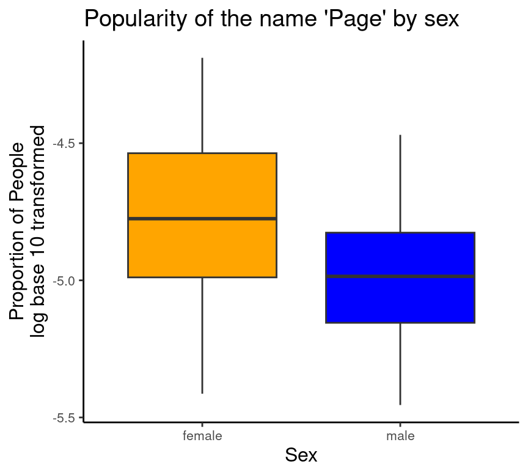
- To save the plot, uncomment (shortcut:
Ctrl+Shift+C) and run:
# ggsave('figures/boxplot_propotion_by_sex.pdf', dpi = 300)- To make the figure prettier, there are various elements you can change. Have a look at this at home.
# Proportion of 'Page's by sex (categorical predictor)
sex.plot = ggplot(data_figs, aes(x = sex, y = prop_log10, fill=sex))+
geom_boxplot()+
# choose a design
theme_classic()+
# Add a title
ggtitle("Popularity of the name 'Page' by sex")+
# Customize the y-axis (with a line break)
ylab("Proportion of People\n(log base 10 transformed)")+
# Customize the x-axis
xlab("Sex") +
# Custom colours for the fill variable (sex)
scale_fill_manual(values = c("orange", "blue"))+
# Additional paramaters for displaying plot
theme(text=element_text(size=10), # text size
title=element_text(size=10), # text size for title
legend.position="none") # no legend
sex.plot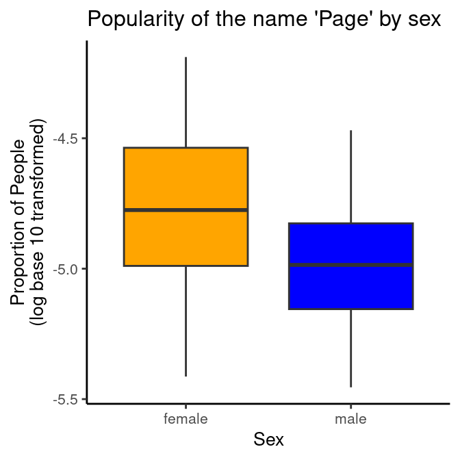
# to save the plot:
# ggsave('figures/boxplot_propotion_by_sex.pdf', dpi = 300)
Caution
The figure script is done. Save it, commit to Git, and push to GitHub!
7 Math of linear regression
The basic equation of linear regression is:
yi = a + bix + ei
- yi = a specific y value (dependent variable)
- a = intercept (where the regression line crosses the y-axis when x = 0)
- b = slope (change in y for one change in x)
- xi = specific x value (independent variable, predictor)
- ei = random variance, residual, noise
7.1 Continuous predictor
Let’s see an example for a continuous predictor: How does the weight of chicks change over time? As more time passes, the weight increases.

We can add a line to show the increase:
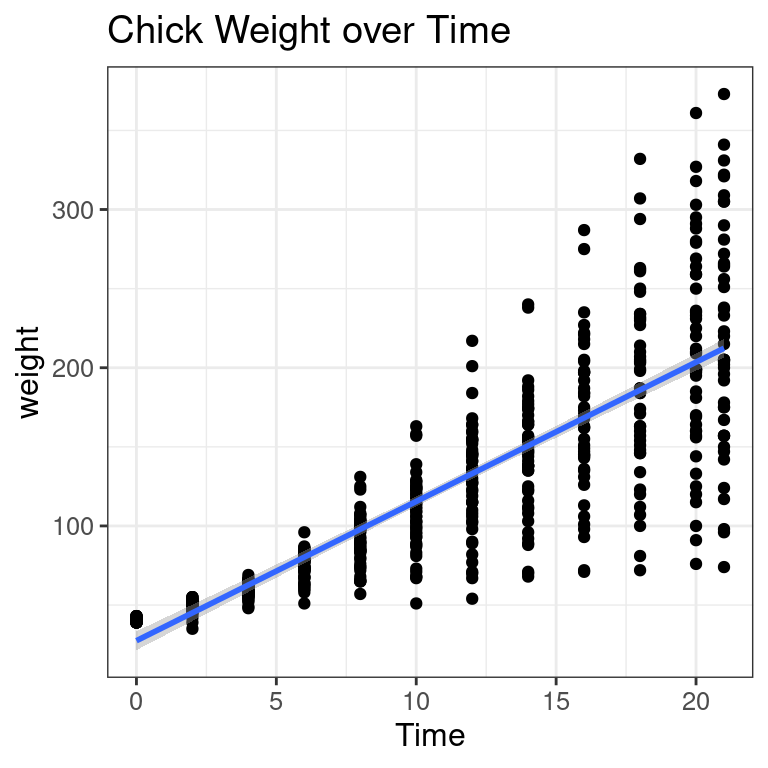
- Let’s pick a specific data point. These are the y and x values for a data point:
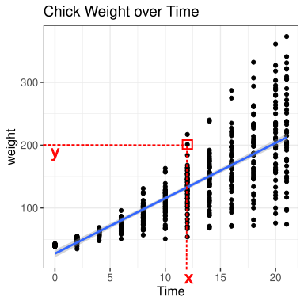
- Here, you see a, the intercept: The weight when x = 0 (when chicks are zero days old).
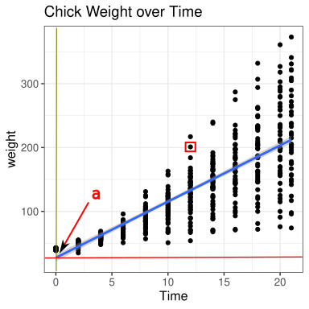
- Here, you see b, the slope: How much weight does a baby chick gain on average on a day? (Change in y, when x changes by 1, here from day 5 to 6)
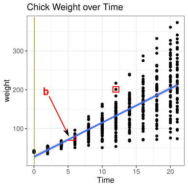
- Here you see the residual for the data point: The difference between model prediction and the actual data:
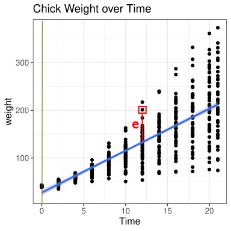
7.2 Categorical predictor
What if x is categorical?
a = bx
| – | Continuous Predictor | Categorical Predictor |
|---|---|---|
| x | a set of continuous data points | a set of binary/categorical data points |
| a | the value of y when x is 0 | the value of y when x is the default level |
| b | the change in y for one change in x | the change in y when x is the non-default level |
As an example, let’s say chicks get 2 different diets:
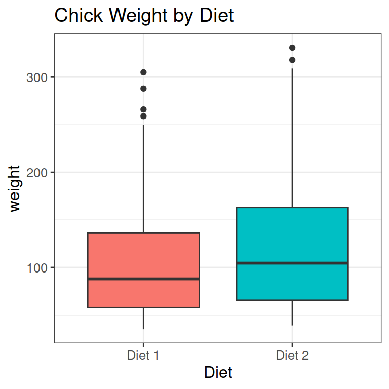
We can look at this as a collection of points:
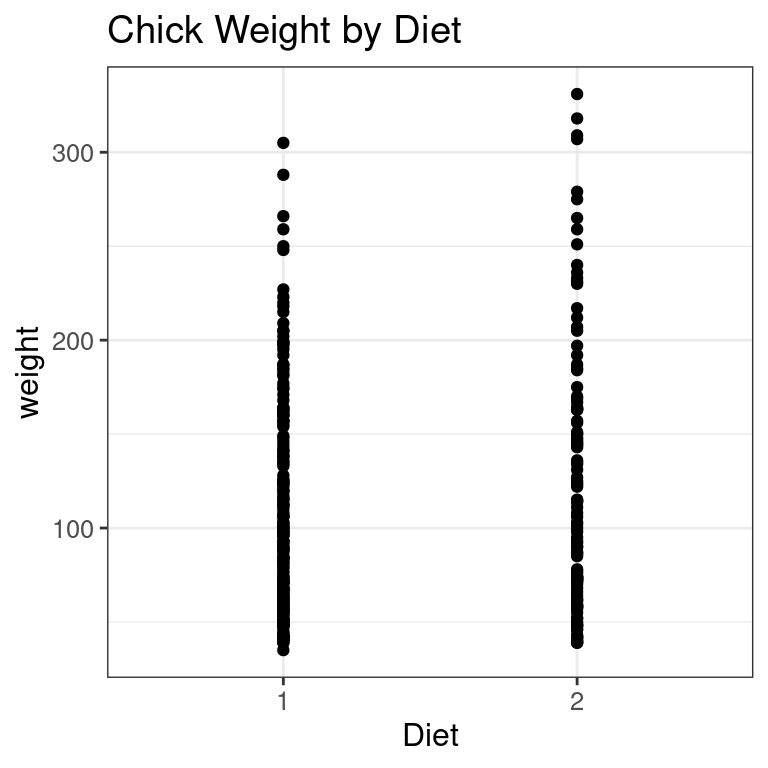
We need to change the labels of diets to values: 0 for the default, and 1 for the next level.
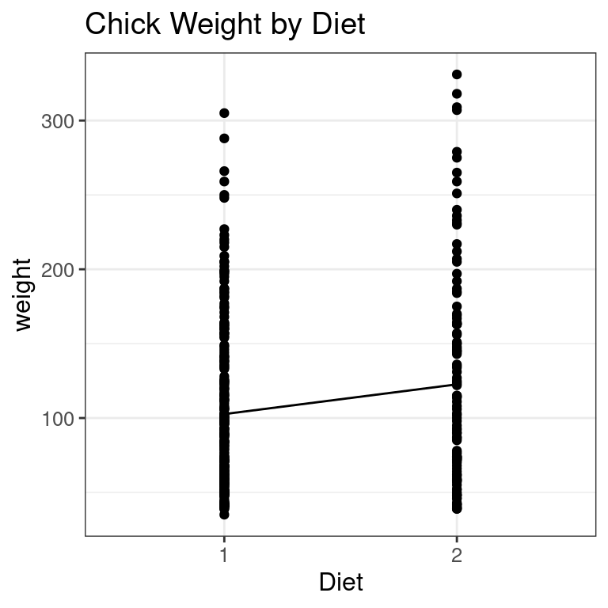
X and y for a specific data point:
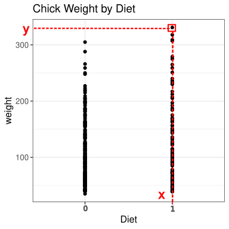
Now we add a line from one mean to the second. The intercept is the value of y when x is the default level (Diet 1). Here slightly above 100.
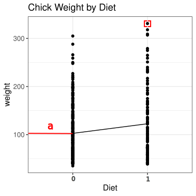
The slope is the change in the mean of Diet 1 to Diet 2:
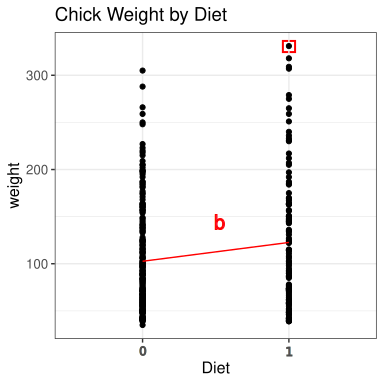
The residual is the difference between the model prediction and the actual data point.
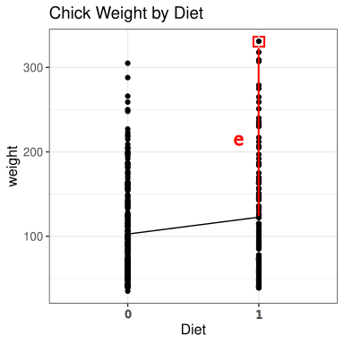
8 Statistics script: Linear regression
As always, start with a section to read in data, then one to load packages.
- We don’t need any package at the moment, but you usually want to add some later while doing the analysis.
## READ IN DATA ####
source("code/01_cleaning.R")
## LOAD PACKAGES #####
# [none currently needed]As before, we make a new data frame for statistics data:
## ORGANIZE DATA ####
data_stats = data_clean8.1 Continuous predictor: Year
- The notation for a linear regression in R is:
lm (y \~ x) - In the chick weight example above, this would be:
lm(weight \~ Time) - To see the output of the model, we use
summary(model).
## BUILD MODEL - PROPORTION OF 'PAGE'S BY YEAR (CONTINUOUS PREDICTOR) ####
year.lm = lm(prop_log10 ~ year, data = data_stats)- Store the model in an object:
year.lm - Using names like “sex.plot”, “name.plot”, “year.lm” is a useful convention to know what objects are.
- The model itself is lm(prop_log10 ~ year), with prop_log10 as the dependent variable and year as the predictor.
- To look at the output, we call
summary():
year.lm_sum <- summary(year.lm)
year.lm_sum
Call:
lm(formula = prop_log10 ~ year, data = data_stats)
Residuals:
Min 1Q Median 3Q Max
-0.61168 -0.21669 -0.01011 0.21070 0.63950
Coefficients:
Estimate Std. Error t value Pr(>|t|)
(Intercept) -7.2755739 1.6258109 -4.475 1.39e-05 ***
year 0.0012298 0.0008314 1.479 0.141
---
Signif. codes: 0 '***' 0.001 '**' 0.01 '*' 0.05 '.' 0.1 ' ' 1
Residual standard error: 0.2855 on 172 degrees of freedom
Multiple R-squared: 0.01256, Adjusted R-squared: 0.006821
F-statistic: 2.188 on 1 and 172 DF, p-value: 0.1409- Exact numbers of intercept and slope are not very informative, because they are log transformed values.
- Effect of year not significant: t =1.48, p = 0.141
- We can look at the residuals with the call
resid(). Here, I store them and then look at the fist values:
year.lm_resid <- resid(year.lm_sum)
head(year.lm_resid) 1 2 3 4 5 6
0.458328911 0.002919516 0.306492439 0.320914578 0.155653238 0.223908801 8.2 Categorical predictor: Sex
- Copy your code just above from the regression with
year, then change the predictoryeartosex.
## BUILD MODEL - PROPORTION OF 'PAGE'S BY SEX (CATEGORICAL PREDICTOR) ####
sex.lm = lm(prop_log10 ~ sex, data = data_stats)
sex.lm_sum = summary(sex.lm)
sex.lm_sum
Call:
lm(formula = prop_log10 ~ sex, data = data_stats)
Residuals:
Min 1Q Median 3Q Max
-0.65876 -0.19694 -0.01178 0.18304 0.56589
Coefficients:
Estimate Std. Error t value Pr(>|t|)
(Intercept) -4.75465 0.02860 -166.244 < 2e-16 ***
sexM -0.22706 0.03999 -5.678 5.7e-08 ***
---
Signif. codes: 0 '***' 0.001 '**' 0.01 '*' 0.05 '.' 0.1 ' ' 1
Residual standard error: 0.2637 on 172 degrees of freedom
Multiple R-squared: 0.1578, Adjusted R-squared: 0.1529
F-statistic: 32.24 on 1 and 172 DF, p-value: 5.698e-08- The line “sexM” shows the effect for sex.
- It is significant: t = -5.68, p = 0.
- How do you know in which direction the effect is?
- R by default codes variables alphabetically, so our default level is “F” for female.
- Coefficients indicate the change from the default to the second level (here: from F to M)
- You can also see this because R adds “M” to the variable name: “sexM”, so it’s the effect for men (compared to women).
- The Estimate (\(\beta\)) -0.23 is negative: Less men (a lower proportion of the population) are called “Page” than women.
To do
Save the script, commit to Git (message: “Made statistics script”), and push to GitHub.
9 Write up: Quarto Report
We repeat the steps from the last lesson (see Lesson 2 for more explanation):
- Save your current working environment to your write-up folder as
lesson3_environment. - Open a Quarto Document.
- Delete everything below the chunk at the top that starts and ends with
---. - Save the Quarto document in your write_up folder as
Lesson3_Report. - After this, insert a code chunk (Shortcut:
Ctrl/Cmd + Alt + I) and enter the code below to load your environment.
```{r, echo=F}
load('lesson3_environment.RData')
```
Add
echo = FALSE(or only the F) in the curly brackets after r: ```{r, echo = FALSE}. This let’s R know you do not want to print out (echo) the code in the report, but only its results.Now add sections to your report, for example:
Introduction
Results
- Prevalence by Year
- Prevalence by Sex
Conclusions
Now you can write something in each section. For example:
# Introduction
We analysed how common the name "Page" was in the United States in between 1900 and
2000. We used data from the USA Social Security Administration on baby names.
We used linear regression to analyse the change of the name over time, and the
difference of the name's popularity between men and women. - In the Results sections, you can include the figures and model results by calling the objects within a code chunk:
# Results
## Prevalence by Year
We built a linear model to test the effect of year on the proportion of people
with the name "Page". Proportion was log base 10 transformed, because it was
not normally distributed.
There was no significant change in the popularity of the name over time. The
positive coefficients indicates a slightly increasing slope over time.
```{r, echo=F}
year.plot
year.lm_sum
```
## Prevalence by Sex
The name is more popular among women then men.
```{r, echo=F}
sex.plot
sex.lm_sum
```
- You can continue describing your results and the conclusion at home.
- To compile the Quarto report, click
Renderat the top of the Quarto document. - You can change the format from html, to docx, or pdf.
10 References & Resources
This lesson closely follows: Page Piccinini (2018). “R for Publication”, Lesson 2: Linear Regression.
- The completed code for the lesson can be found here.
- Use git clone to download it into a folder on your computer, or download just the file you need.
- For Quarto tips and tricks, check the online documentation: https://quarto.org/
- Shortcuts and options: https://quarto.org/docs/visual-editor/options.html